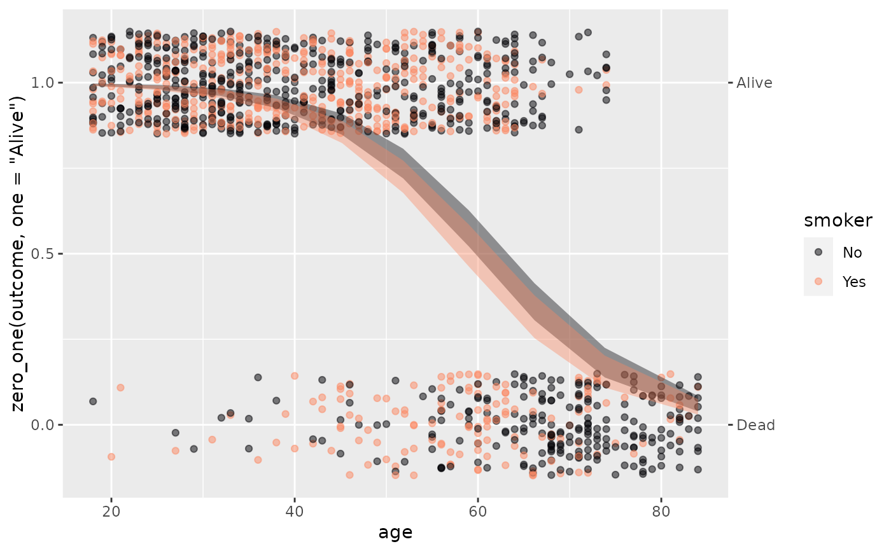
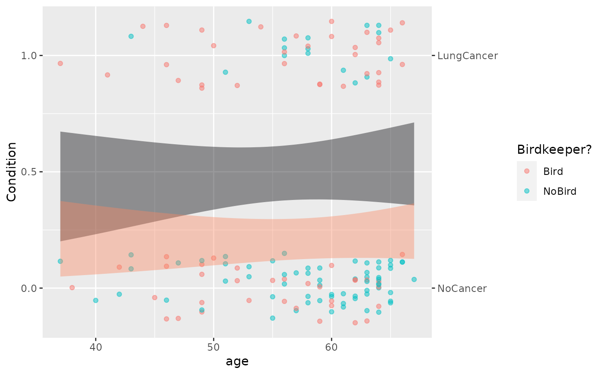

A convenience function for handling categorical response variables. Ordinarily, ggplot2 maps categorical levels to numerical values 1, 2, .... Such numerical mapping is inappropriate for logistic modeling, where we want the levels to be on a probability scale.
Arguments
- x
a categorical variable
- one
character string specifying the level that gets mapped to 1.
- P
A ggplot2 object made by
model_plot()orpoint_plot()
Examples
Birdkeepers |>
point_plot(zero_one(LC, one="LungCancer") ~ AG + BK, annot = "model")

Birdkeepers |>
mutate(Condition = zero_one(LC, one = "LungCancer")) |>
point_plot(Condition ~ AG + BK, annot = "model") |>
label_zero_one() |>
add_plot_labels(x="age", color = "Birdkeeper?")
#> Scale for colour is already present.
#> Adding another scale for colour, which will replace the existing scale.
